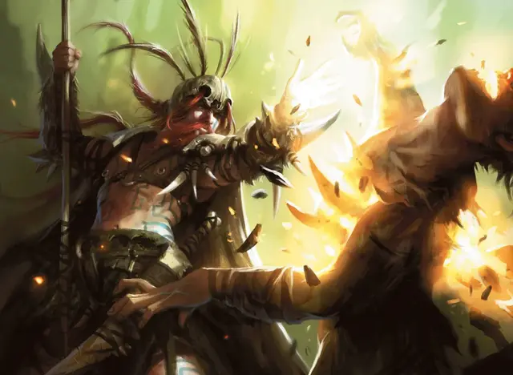

Друид Старины
Druid of the Old Ways
Средний Гуманоид (Любой расы), хаотично-нейтральный

Класс Доспеха 14 (шкурный доспех)
Хиты 90 (12к8 + 36)
Скорость 30 футов
| мод | спас | ||
|---|---|---|---|
| СИЛ | 11 | +0 | +0 |
| ЛОВ | 15 | +2 | +5 |
| ТЕЛ | 16 | +3 | +6 |
| мод | спас | ||
|---|---|---|---|
| ИНТ | 10 | +0 | +0 |
| МДР | 20 | +5 | +8 |
| ХАР | 14 | +2 | +2 |
Навыки Восприятие +8, Выживание +8, Природа +3
Чувства пассивное Восприятие 18
Языки Общий, Друидический
Опасность 7 (2900 опыта)
Бонус мастерства +3
Особенности
Осадное чудовище. Друид наносит двойной урон объектам и сооружениям.
Разговор с животными и растениями. Друид может общаться с животными и растениями, как если бы они и друид говорили на одном языке.
Использование заклинаний. Друид Старины является заклинателем 12-го уровня. Его базовой заклинательной характеристикой является Мудрость (Сл спасброска от заклинания 16; +8 к попаданию атаками заклинаниями). Он имеет следующие подготовленные заклинания друида:
• Заговоры (Неограниченно): искусство друидов [druidcraft], сотворение пламени [produce flame], сопротивление [resistance], терновый кнут [thorn whip]
• 1-й уровень (4 ячейки): лечение ран [cure wounds], огонь фей [faerie fire], волна грома [thunderwave]
• 2-й уровень (3 ячейки): животные чувства [beast sense], горящий клинок [flame blade], бесследное передвижение [pass without trace]
• 3-й уровень (3 ячейки): призыв животных [conjure animals], рассеивание магии [dispel magic], рост растений [plant growth]
• 4-й уровень (3 ячейки): подчинение зверя [dominate beast], свобода перемещения [freedom of movement], огненная стена [wall of fire]
• 5-й уровень (2 ячейки): общение с природой [commune with nature], призыв элементаля [conjure elemental], наблюдение [scrying]
• 6-й уровень (1 ячейки): путешествие через растения [transport via plants], терновая стена [wall of thorns]
Действия
Боевой посох. Рукопашная атака оружием: +3 к попаданию, досягаемость 5 футов, одна цель. Попадание: 3 (1к6) дробящего урона или 4 (1к8) дробящего урона если используется двумя руками.
Описание
Друиды Старины— хранители древних традиций груулов, посвященных первобытной свирепости богов-животных, таких как Ильхарг Вепрь-Разрушитель и Кашат Ловчий.
Конец-Разрушения. Друиды древнего пути верят, что цивилизация никогда не будет уничтожена разрозненными набегами и мелкими стычками. Они цепляются за идею грядущего апокалипсиса, Конца-Разрушения, когда копыта Ильхарга растаптывают в щебень каждый кирпич и камень на парящих горизонтах Равники. Мир вернется к естественному состоянию, в котором снова воцарится беззаконный кодекс мускулов и дикости.
НИКИЯ Старины
Предводительница Жур-Таа, Никия, - могущественный друид-кентавр Старины. На самом деле она считает себя последним из истинных друидов Груула. Хотя Никию воспитывали как воина, вскоре она обнаружила в себе природные способности к магии. Она может вызывать огромные стягивающие лианы из древних слоев коры Равники. Она не питает особой любви к Борборигмосу и верит, что перед началом Последнего разрушения среди груулов появится другой лидер - тот, кто будет верен Старине.